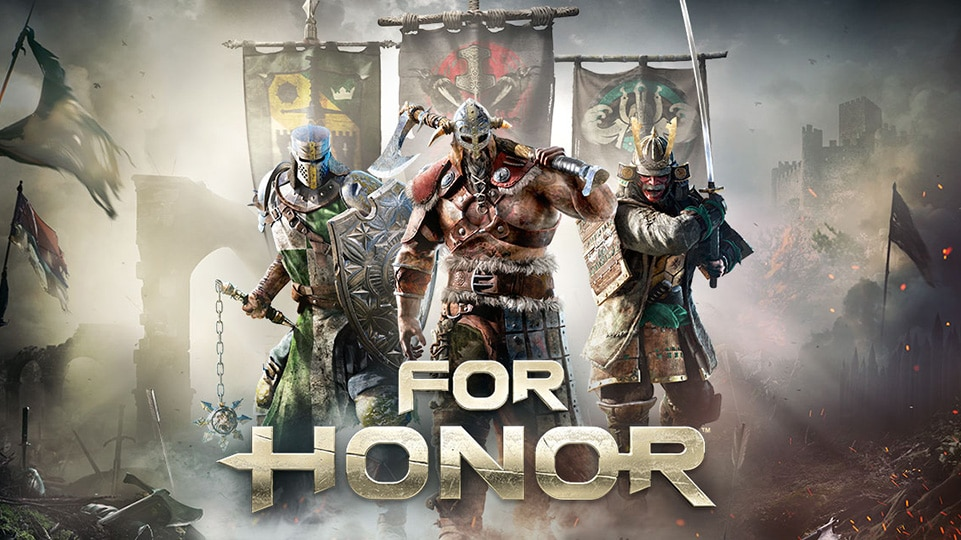

For Honor, desarrollado por Ubisoft Montreal y distribuido por Ubisoft para PC, PlayStation 4 y Xbox One, es un título de acción táctica de corte beat'em up en el que varias facciones de guerreros y caballeros se enfrentan en brutales combates a espada con un fuerte componente tanto cooperativo como competitivo.
Jugabilidad
For Honor es un juego de lucha y acción ambientado en un entorno de fantasía medieval postapocalíptico. Los jugadores pueden jugar como un personaje de cuatro facciones diferentes, a saber, la Legión de Hierro, los Elegidos, los Warborn y los Wu Lin. Las cuatro facciones representan caballeros, japoneses, vikingos y chinos respectivamente.
Cada facción tuvo cuatro clases en el lanzamiento, y se agregaron dos más al comienzo de cada temporada de la Guerra de Facciones. Los guerreros de cada facción hablan sus respectivos idiomas en el juego. Los caballeros hablan latín clásico y modificado, los vikingos hablan islandés y los samuráis hablan japonés. La clase Vanguard se describe como "bien equilibrada" y tiene una gran ofensiva y defensa. La clase Assassin es rápida y eficiente en duelos, pero la clase ofrece mucho menos daño a los enemigos. Los Heavies son más resistentes a los daños y son adecuados para mantener puntos de captura, aunque sus ataques son lentos. La última clase, conocida como Híbridos, es una combinación de dos de los tres tipos, y es capaz de usar habilidades poco comunes.
<

El arte de la batalla en For Honor
Ya sea con las katanas samuráis, las espadas de caballería o las hachas vikingas, 'For Honor' pondrá todo su énfasis en el combate cuerpo a cuerpo, buscando en palabras de sus creadores ofrecer una experiencia intensa y realista, pero sin renunciar a un control accesible a cualquier jugador.
El héroe que controlemos irá acompañado de un ejército aliado controlado por la máquina
En el fragor de la batalla, el héroe que controlemos irá acompañado de un ejército aliado controlado por la máquina, y según nos vayamos abriendo paso entre los enemigos, lograremos desbloquear puntos que nos darán acceso a mejoras de nuestras características o habilidades como sanación, apoyo de arqueros y similares.
Cuando llegue la hora de batirnos directamente en duelo con los rivales más poderosos, se pondrá en marcha lo que Ubisoft ha bautizado como El arte de la batalla, una mecánica de juego que buscará hacernos sentir la máxima intensidad del combate a espada. En estos duelos a muerte podremos elegir cómo posicionarnos, la forma de enarbolar el arma y deberemos observar atentamente al enemigo para encontrar sus puntos débiles.